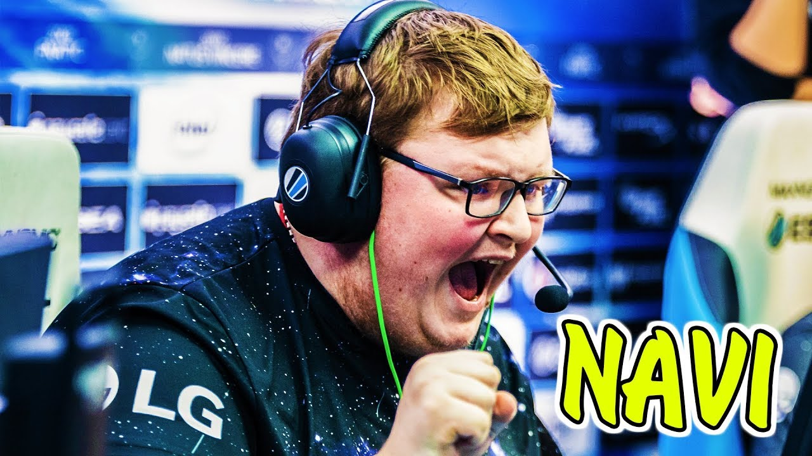

Кирилл Михайлов (род. 20 декабря 1998, Москва, Россия) также известный как «Boombl4» (читается как Бу?мыч) — российский киберспортсмен в дисциплине Counter-Strike: Global Offensive. Играет в команде Natus Vincere (Counter-Strike) на позиции стрелка.
Карьера Кирилла Михайлова началась в команде Elements Pro Gaming, но спустя несколько месяцев он переходит в команду Quantum Bellator Fire.[1] Долгое время успехов у команды не было, но в 2018 году, она занимает 2 место в СНГ Миноре к ELEAGUE Major: Boston 2018. Прогнозы на команду Quantum Bellator Fire были не утешительны, но тем не менее, команда заняла 5-8 место и обрела статус «Легенды»[2]. 20 июня 2018 года, организация Winstrike выкупает состав Quantum Bellator Fire. 21 октября 2018 года стало известно, что Winstrike переводит всех игроков команды в запас кроме Кирилла. Это было вызвано неудачным выступлением на FACEIT Major: London 2018, там команда проиграла три карты из трёх и выбыла.[3] Он стал капитаном и новая команда была построена вокруг него. В этой команде Кирилл играл вплоть до перехода в Natus Vincere.
28 мая 2019 года на портале HLTV появляется статья в которой сообщается что сделка между Winstrike Team и Natus Vincere по переходу Кирилла в состав Na`Vi уже близка к завершению.[4] На следующий день организации объявили о конце сделки. В итоге, Кирилл был заменён на Иоанна «Edward» Сухарева, который в свою очередь будет играть на правах аренды. [5]Генеральный директор Winstrike Ярослав Комков заявил, что трансфер Кирилла стал самым дорогим в истории российского киберспорта.[6] После перехода, Кирилл рассказал что чувствует себя виноватым перед Winstrike Team. После трансфера предыдущая команда Михайлова не смогла пройти отборочные на CIS Minor Championship — Berlin 2019 и лишилась шансов попасть на StarLadder Berlin Major 2019.Первым турниром Кирилла стал ESL One Cologne 2019. В нем команда заняла 3-4 место проиграв на то время топ-1 команде мира Team Liquid. Стоит отметить что во время 2 карты он лидировал по счёту среди команды.[7] После ухода Даниила «Zeus» Тесленко из команды,Кирилл занял роль внутри-игрового лидера (IGL) коллектива, о чем организация Natus Vincere объявила на официальном сайте 20 сентября 2019 [8]